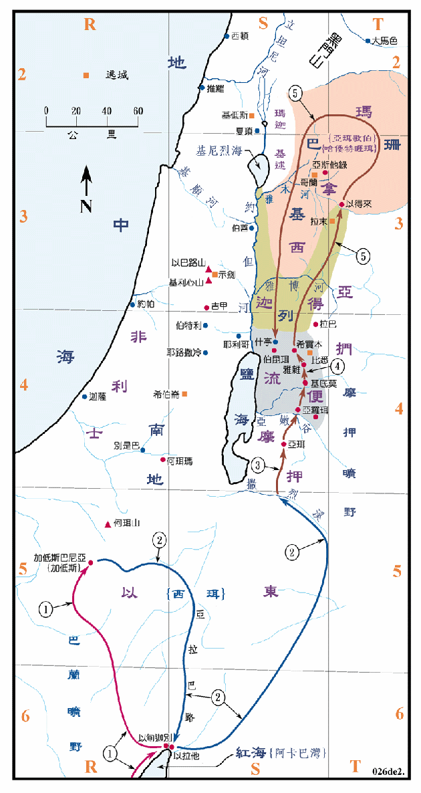

1406BC

行动线说明
| 序号 | 圣经 | 说明 |
|---|---|---|
| 1 | 申1:19 | 从何烈山到加低斯巴尼亚。 |
| 申1:23-25 | 遣探子窥探迦南地。(参看民图02) | |
| 申1:26-40 | 以色列人发怨言，神就发怒，命他们转回，从红海的路往旷野去。 | |
| 申1:43-46 | 突击亚摩利人。(参看民图02) | |
| 申2:1-2 | 在旷野飘流卅八年。 | |
| 2 | 申2:8-13 | 再开始进迦南的行程，自西珥山从亚拉巴的路，经过以旬迦别，转向摩押旷野的路去，到撒烈溪。 |
| 3 | 申2:16-19 | 从撒烈溪经摩押到亚嫩谷。 |
| 4 | 申2:24-36 | 击败希实本王西宏，取得他的地为业。 |
| 5 | 申3:1-11 | 击败巴珊王噩，取得他们的地。 |
| 申3:12-17 | 分地给河东的两个半支派。 | |
| 申4:41-44 | 设立三座逃城。 | |
| 申10:6-8 | 亚伦去世前后之站口，因位置皆不明，故未绘。 | |
| 申11:29-30，27:11-14 | 令将祈福的话陈明基利心山，将咒诅的话陈明在以巴路山。(参看书图01) |
此段是复述出埃及到进迦南的事，但与民数记廿一章和卅三章两处所述者并不一样，请比较。离开西珥到以拉他和以旬迦别，先从亚拉巴的路，就是从加低斯先向东行，穿过以东中部，待到了亚拉巴谷之后，即沿谷南下，然后转向摩押旷野的路，应就是绕过以东的东境，直到撒烈溪，而且在过了撒烈溪之后并没有明确路线，只有几个地名作参考。